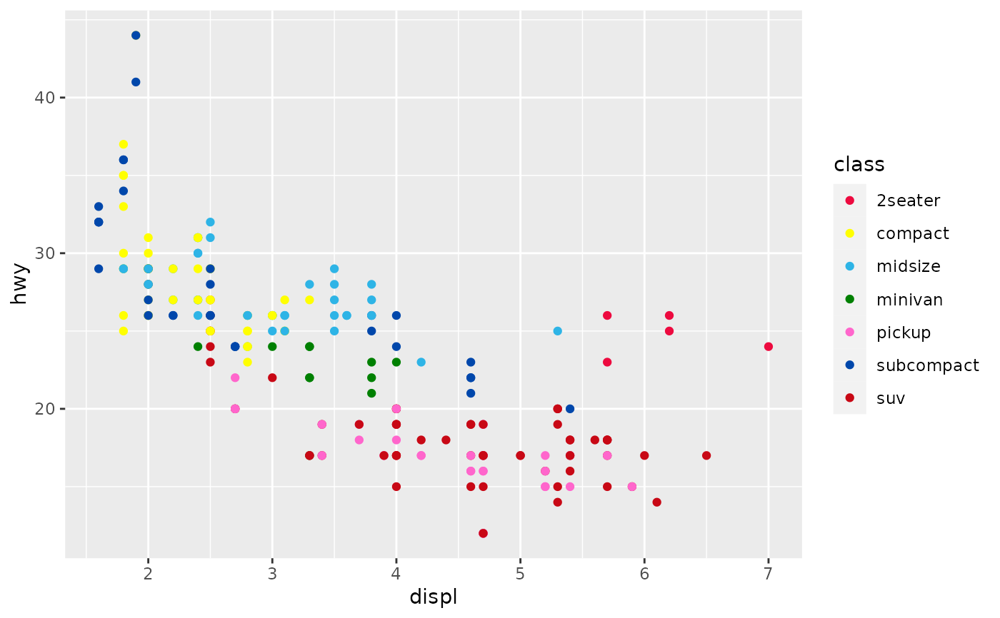
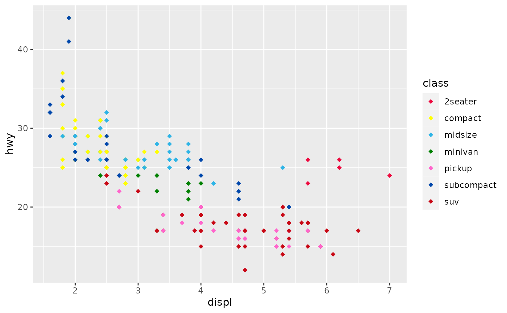

Crayon Color Scales for ggplot2
Usage
scale_color_crayons(palette = "standard16", which = NULL, ..., reverse = FALSE)
scale_fill_crayons(palette = "standard16", which = NULL, ..., reverse = FALSE)
scale_colour_crayons(
palette = "standard16",
which = NULL,
...,
reverse = FALSE
)Arguments
- palette
palette from
names(crayons)to use- which
numeric indices of colors to use.
NULLby default.- ...
arguments passed on to
ggplot2::discrete_scale()- reverse
Should the vector be reversed? Default is
FALSE.
Examples
library(ggplot2)
ggplot2::mpg |>
ggplot() +
geom_point(aes(displ, hwy, colour = class)) +
scale_color_crayons(palette = 'original')

ggplot2::mpg |>
ggplot() +
geom_point(aes(displ, hwy, fill = class), pch = 23, color = 'transparent') +
scale_fill_crayons(palette = 'original')
